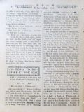
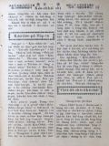
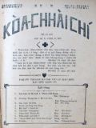
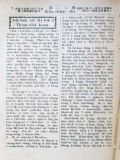
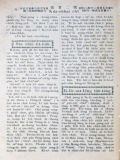

Languages
台文
｜
中文
｜
日本語
｜
English
字體
小
｜
中
｜
大
首頁
/
白話字數位典藏
白話字數位典藏全文檢索
查詢模式
選擇年代
清國時代(1885-1895)
日本時代(1895-1945)
戰後(1945-1969)
1885-1895
1896-1905
1906-1915
1916-1925
1926-1935
1936-1945
1946-1955
1956-1965
1966-1969
1970-1980
1980-1990
1990-2000
2000-2010
2010-
選擇文類
詩
散文
小說
戲劇
傳記
選擇作者
陳清忠
陳清義
編輯部
柯設偕
吳天命
明有德
偕叡廉
周天來
劉華義
王守勇
林茂生
陳添旺
王占魁
柯維思
賴仁聲
陳瓊琚
雪峰逸嵐
吳清鎰
郭水龍
蕭樂善
許水露
葉金木
陳金然
章王由
廖得
鄭連坤
潘道榮
楊士養
梁秀德
劉約翰
周淑慧
高金聲
林燕臣
黃六點
蔡愛義
許有才
主筆
巴克禮
郭朝成
陳鳩水
張基全
陳明清
陳能通
拾穗生
顏振聲
卓恆利
傳道局
胡文池
劉主安
鄭兒玉
康清塗
Google Search
Yahoo Search
全部
刊名
標題
標題(教羅)
全文
全文(教羅)
作者
第13頁，共141頁(共2,805筆資料) 0.6828339099884sec
1
...
11
12
13
14
15
...
141
To Page
GO
文字列表
圖文列表
排序
日期
文類
刊名
作者
影像
[1927-9 芥菜子 文類-散文 作者-雪峰逸嵐/Soat-hong Iat-lâm]
(3)
感觸 [ Kám-chhiok ]
感觸 (雪峰逸嵐) 讀前號的本報「我攻擊牧者羊群就四散」忽然閣再引起無限的憂愁，重拍起佇我的心內teh近感觸著一句。耶穌m̄-nā欲警戒當時的學生nā-tiāⁿ，也是欲警戒現時佮後代的基督徒。通講世間的廢無，這句話袂廢無。現是台灣教會的狀態，通講佮猶太末世(末世) 的風俗是差毋多--的，(=差無濟)現時濟濟人teh講基督教thài袂興？六十外年lah，信者猶真少。起初teh傳，成績hiah nī好，現時thài按呢？是啥原因？Ai-ah！強欺弱，欺貧重富，抱勢力，抱自高，強權壓迫無照公理，無顧大局，宛然是猶太的末世。為著按呢，無力的，軟chiáⁿ--的，愛欲活--的，就著穿運動鞋...
[1927-9 芥菜子 文類-散文 作者-陳瓊琚/Tân Khêng-ku]
(6)
世界十二偉人論 [ Sè-kài cha̍p-jī Uí-jîn lūn ]
世界十二偉人論 時代變遷就思想以及逐項攏綴伊變換。所以論對偉人的思想標準也攏變款。Taⁿ佇遮所欲介紹偉人的事是對雜誌譯出的。就是teh論現今一般的青年學生對偉人的觀念甚物款。譬喻早時愛相刣的時代逐人攏用武將親像Ná-phô-lûn，抑是亞歷山大等等做偉人。總是思想的變遷真緊，現時就毋是按呢；taⁿ請來看：-這个問題是美國戰爭Hông-siōng國民委員會對全世界大學生the̍h出偉人投票敬稱的論文發表。實在有來應募的國有三十个以上。總是論關係選擇偉人的事有三項要緊的條件，就是欲投票偉人論的人所著知影的有三條件：-(1)著選彼款品性高潔的。(2)為著正義毋驚死，閣著愛有發揮犧牲的精神彼款人。...
[1927-9 芥菜子 文類-散文 作者--/-]
(3)
教囝的法度 [ Kà kiáⁿ ê hoat-tō͘ ]
教囝的法度 (續接前號) 罰囡仔的時，毋通毋罰伊，早有兩國交戰，一國出兩隊兵，一隊予太子管，一隊予公爵管，到半路，太子的營內，一个兵偷the̍h人的物，共伊定死罪，公爵就替這个兵對太子講情。太子講，凡若偷the̍h人的物的，我的確無赦免伊，宮爵講，害ah，我的營內愛偷the̍h 的，一半較加，我攏赦免伊，若照你所講，kám毋是攏著定死罪mah。太子講，著，所以你的營內，犯著這个偷the̍h來受刑罰的真濟，我就毋是按呢，若患著的。的確著死，受這款的刑罰的，才真少，囡仔也是按呢，伊若知免受刑罰，的確逐項敢做這攏是對佇應該罰伊，毋罰伊的緣故。 也有一款囡仔做歹若看父母的面色，就知通改...
[1927-9 芥菜子 文類-散文 作者-柯設偕/Koa Siat-kai]
(1)
淡水教會有志佈道隊 [ Tām-suí kàu-hoē Iú-chì pò͘-tō-tuī ]
淡水教會有志佈道隊 佇今年2月，淡水教會有組織一陣。 佈道隊。名稱名叫「淡水教會。 佈道隊。 目的就是，愛傳報福音佇淡水附近的地方，通擴張上帝的聖國。 起頭有揀He-lô-á，(離淡水4 mai-英里)。因為以前有設拜堂佇遐。 逐拜六，隊員有輪流去遐佈道，演講教主日學。 遐的人真歡迎，機會通講真好。向望會漸漸發展，加添人額。 M̄-nā按呢，也有teh計畫著佇較濟所在來佈道，設主日學。 Kiám-chhái將來會通設講義所。向望讀報的兄姊，佇祈禱的時，替這个淡水教會佈道隊祈禱。 向望上帝的幫贊，會漸漸發展。...
[1927-10 芥菜子 文類-選擇文類 作者-編輯部/Phian-chip-pō͘͘]
(1)
封面 [ Hong-bīn ]
芥菜子 第21號 1927年10月27號 「天國親像一粒芥菜子，人提去掖佇伊的園；這个是百項種子的第一細；到伊大叢，是較大攏總的菜蔬，紲成做樹，致到空中的鳥來歇伊的枝。」 馬太13章31節 「咱若有信親像一粒芥菜子，恁就欲共這个山講，對遮徙去遐，ia̍h欲徙去；閣恁teh欲無一項袂。」 馬太17章20節 北部台灣基督長老教會 教會公報 內容 1. 世界的結局 陳清義 2. 兒童中心的基督教 陳清忠 3. 寄生蟲 吳清鎰 譯 4. 迷信快傳染 陳清義 ...
[1927-10 芥菜子 文類-散文 作者-陳清義/Tân Chheng-gī]
(3)
世界的結局 [ Sè-kài ê kiat-kio̍k ]
世界的結局 我有讀這本細本冊，Parker博士所著的，論起世界結局這層事，不止有你。這个世界實在真大，頂面是天，下面是地，袂會無起頭，也袂會無續尾。 這个問題科學家，宗教家，攏有辯論了，逐个攏集in所講--的；總是照基督教聖經所記載，這个天地萬物，以及地球上的人群，或是空中的世界，宇宙間的日，月，星辰，無毋是上帝所創造的。經過hiah濟年星辰，地球的運行無煞，萬物的生活佇彼个中間，對在早到這霎，這个是世界的起頭，真明。既然有起頭自然的確有路尾，所以世界結局的問題，是人類所著研究的材料，總是這个代誌體真大，設使若毋是上帝的啟示，kan-ta倚靠人的智識來推測無法得。聖經是上...

[1927-10 芥菜子 文類-散文 作者-陳清忠/Tân Chheng-tiong ]
(4)
兒童中心的基督教 [ JÎ-TÔNG TIONG-SIM Ê KI-TOK-KÀU ]
兒童中心的基督教 TIÂN CHHOAN TI̍T-SIN 著 陳清忠 譯 第一章 「基督教的精神」 oa̍t-Joē-le̍k (G.F. Watts)是英國出名的畫工，伊佇1904年7月過身，享壽87歲。伊有流濟濟的宗教畫 (圖)佇後世，人若看伊的圖就會明白，知伊m̄-nā是富有佇預言tek (預言的)精神的人閣再是有創造tek(創造的)才能(才能) 的畫工。中間伊所第一貢獻佇萬國的基督徒的名畫就是彼張基督教的「精神」-基督坐佇雲頂，伊的腳頭u的有四個赤體的細漢囡仔佇teh，基督倒手比心肝，正手比chiah的細囝。 若講基督教的精神，萬人的確teh欲異口同音來叫講...
[1927-10 芥菜子 文類-散文 作者-吳清鎰/Gô͘ Chheng-ek]
(1)
寄生蟲 [ Kià-seng-thâng ]
寄生蟲 吳清鎰 譯 蝶(蝶)是刺毛仔蟲變的，是一般的人所知影的，總是照博物學者用顯微鏡，細膩來研究，就知無tú-tú逐尾刺毛仔蟲會變蝶仔，一尾刺毛仔蟲有的時到就親像娘仔 (蠶) kiⁿ殼仔，睏佇殼仔內。後來才變蝶，對殼仔內飛出來，總是有的就毋是按呢，時到就死去，是kan-ta chhun一个刺毛仔蟲殼nā-tiāⁿ。怎樣按呢？就是因為這个刺毛仔蟲，有予一種的胡蠅，共伊叮，紲放胡蠅兩佇刺毛仔蟲的體內(体內)佇遐孵化變做一種的寄生蟲佇刺毛仔蟲的體內(体內)，teh活。Chiah 的寄生蟲就是teh食彼款佇刺毛仔蟲的體內得欲變做蝶的分子，(分子)總是攏無傷害著刺毛仔蟲的外形 (外形)所...
[1927-10 芥菜子 文類-散文 作者-陳清義/Tân Chheng-gī]
(2)
迷信快傳染 [ Bē-sìn khoài thoân-jiám ]
迷信快傳染 佇士林附近有一個細的山仔，號做芝山巖頂面有起一間廟是服事開漳聖王，月外日前佇山腳的石頭邊有出一káng水泉，人共伊號做仙水。 就四界謠言講不論甚物病若啉彼个水，就會好，對彼霎了後，就有人去遐入水。日日ná濟人，對各方面來，大家去遐入水，紲去廟裡燒金，現時每日有幾若千人去，我也去共伊看覓，果然oe oe陣陣往來不絕，有的對火車，有的對自動車，有的對人力車，真心適，真鬧熱，欲去入水，著輪班，等真久，著接一choā長長親像鬧熱時排佇停車場接一choā長長去鉸單的款，逐人所得著的水是2，3，兩nā-tiāⁿ，無通予人濟，逐人得著彼个水看著ka-ná寶貝，佇路邊有人搭店仔...
[1927-10 芥菜子 文類-散文 作者-明有德/Bêng Iú-tek]
(1)
基督降世彼一時博士歡喜去揣伊 [ Ki-tok kàng-sè hit chi̍t sî Phok-sū hoaⁿ-hí khì chhē I ]
基督降世彼一時博士歡喜去揣伊 這首詩的作者是Nilliam Chatterton Qix伊佇1837年出世佇英國Bristol的所在。伊的老父是做醫生。伊本身無甚物職業，不過kan-ta著冊佮鼓舞教會的事nā-tiāⁿ。伊不時佇教會來教詩，彈琴，吟詩。伊所著的冊較濟是屬佇聖詩佮禮拜的禮式。 聖公會揀正月初六做紀念日的因端是因為彼日是gâu 的博士對東方來伯利恆欲揣平安的人君的日。遐的博士是外邦人閣是頭一擺去見耶穌。 所以才揀這日來做紀念。 不幸佇這个紀念日Qix紲破病倒佇眠床裡。這首詩就是佇床中想出--的。 這首的意思是愛予遐的外邦的博士的所行，來通...
[1927-10 芥菜子 文類-選擇文類 作者-偕叡廉/Kai Jōe-liâm]
(2)
東西南北 [ Tang sai lâm pak ]
東西南北 1. 聖冊公會逐月日有新翻譯聖經。佇舊年的中間有翻譯14款，平均就是見26日久聖經就加添一款的口音。 2. 美國長老教會佇這幾年的中間真大出力鼓舞孤寡趕養老會的iân金。佇今年的總會已經有報告講，所收入的已經有3000萬銀。三千萬實在毋是小可，通共in歡喜。 3. 通知美國長老教會真有勢力也真熱心佇教會。現時in teh募集金一千萬欲起一間大間拜堂佇華盛頓，京城的所在。 4. 今年咱的母會有新設教佇滿州。地方比台灣較大有派一位老練的宣教師去佇遐。也有2位本地傳道師去幫贊伊。伊有sè厝佇街裡，也逐日佈道6點鐘久。得著真好機會。佇今年5月設教，到這霎已經得著200外人來信主。 ...
[1927-10 芥菜子 文類-散文 作者--/-]
(3)
教囝的法度 [ Kà kiáⁿ ê hoat-tō͘ ]
教囝的法度 第四章 誠實 講白賊的過失。囡仔第一快犯著。東爿chiah的國的人民。攏掠講白賊無要緊無傷害，反轉笑老實的人是戇人，所以人民自己卑賤有甚物奇怪ah，上古的人就毋是按呢，早有希臘的人到印度遊歷。倒轉來本國了後，呵咾印度的人誠實。按呢通顯明古早東爿的人也有對重誠實。Taⁿ就對反，總是官府常常嚴嚴刑罰in，逼in著老實認。到尾也是用白賊來應，按呢彼个害毋是小可，要緊著綴上古的腳步來行，早波斯王tiàm佇Ló͘-sū。猶大問伊所學的，甚物是第一。波斯王應講，誠實做第一，按呢做父母的人。著緊用這个誠實教示伊的囝兒，盡力除去這號白賊的歹風俗。身軀做法度代先去行是第一要緊，東爿c...
[1927-10 芥菜子 文類-散文 作者-張基全/Tiuⁿ Ki-choân]
(2)
製鹽工業 [ Chè-iâm kang-gia̍p ]
製鹽工業 張基全 人類著食鹽，對古早到現今攏無各樣，m̄-nā人，就一般的生物欲維持in的性命的確著鹽的事實也時明明，親像有醫學家將全然無鹽分的食物予動物食是比放予伊餓閣較快死，總是我捌聽見人講，婦人人生囝月內毋通食鹹，這是大錯誤。 咱人所食的鹽，直接通做血佮肉的成分，人的身軀所有的鹽量約略有12 兩，閣再鹽這部分變做鹽酸，佇胃 (胃)內做胃液，贊消化，按呢這年一人著欠用偌濟鹽？照逐國的平均無甚物定著。東瀛人每年一人至少著15斤。英國，德國，美國人15，6 斤。 鹽m̄-nā對一般的生物是hiah要緊，就工業上，化學上也是掠鹽做真重要的物質。 人欲對...
[1927-10 芥菜子 文類-散文 作者-陳瓊琚/Tân Khêng-ku]
(2)
世界十二偉人論 [ Sè-kài Cha̍p-jī uí-jîn-lūn ]
世界十二偉人論 (續接前號) (11). David Livingstone (1813-1873)。論Livingtone m̄-nā kan-ta是宣教師閣亦是大探險家。In一隊毋驚死對熱帶的大樹林直直入去。咱人會得通知影中部亞非利加的人的事就是對佇這个宣教師的致蔭。Taⁿ伊有抱負兩款的目的佇teh，一項是探險佮伊家己所講新天地開發的事業chham愛用神的道理傳予袂開化的人。Taⁿ為著第一的事業伊費了第一濟的時間。彼个因端是鑽入袂捌人到的世界來開新的路予別人通較快綴伊的腳步來行，這款做先鋒是伊的天職。因為這層的事業費了伊的青春佮害著伊的健康，到尾紲連伊的性命亦為著按呢來犧牲。欲做這款...
[1927-10 芥菜子 文類-選擇文類 作者-編輯部/Phian-chip-pō͘͘]
(1)
教會報合印 [ Kàu-hoē-pò Ha̍p-ìn ]
教會報合印 北部的 「芥菜子」報，對1929年正月起欲合印佇「台灣教會報」的內面。就是欲將「北部事務」這四字換做「芥菜子」。台灣教會報這个名毋免改換，因為這个名是大會所定的，請看大會的會錄，第二回，二十四條佮第三回二十七 條，就會知較早是號做台南教會報，後來佮北部聯合，就改換做台灣教會報。也後來北部有加chhòng一款芥菜子報，起頭是一年四擺，後來改做一年十二擺，近來買去讀的人ná濟。 到本年二月中會聚集的時，有議定這个芥菜子報看是欲家己印抑是欲佮南部合印，意思是毋免chhòng兩位。若欲家己印就毋免佮南部合印，就毋免chhòng彼tó͘北部事務。因為芥菜子報是北部事務佇teh，北部的中...

[1927-10 芥菜子 文類-散文 作者-康清塗/Khng Chheng-thô͘]
(2)
一滴一滴的水 [ Chi̍t-tih chi̍t tih ê chuí ]
一滴一滴的水 (32) 征伐日頭 照生番的傳說有講古早日頭是2粒，一粒是早起時出，ē昏時入，一粒是暗頭出起來到天光才落，對按呢攏無分暝日，人攏無通歇睏，五穀菜蔬佮樹木攏死，人真艱苦彼時眾人就參詳揀5个少年閣勇猛的去拍日頭；總是路真遠著行5，6，十年才會到；in 5个行2，3，十年久的時一个病死2个轉來2个直直去攏無消息；後來前人就閣揀數名的青年一人iāng一个囡仔去；閣the̍h五穀佮kam-á菜的種子去；行真久才到，總是少年人攏真老死去chhun 3个青年就是出發的時所iāng的囡仔大漢的。3个就拔箭射日頭，日頭流出真濟的血，紅的日頭隨時變白，天隨時烏陰，所以現時的月就是彼个流出血的...

[1927-11 芥菜子 文類-選擇文類 作者-編輯部/Phian-chip-pō͘͘]
(1)
封面 [ Hong-bīn ]
芥菜子 第22號 1927年11月27號 「天國親像一粒芥菜子，人提去掖佇伊的園；這个是百項種子的第一細；到伊大叢，是較大攏總的菜蔬，紲成做樹，致到空中的鳥來歇伊的枝。」 馬太13章31節 「咱若有信親像一粒芥菜子，恁就欲共這个山講，對遮徙去遐，ia̍h欲徙去；閣恁teh欲無一項袂。」 馬太17章20節 北部台灣基督長老教會 教會公報 內容 1. 約翰對基督的天職觀。 陳清義 2. 兒童中心的基督教。 陳清忠 譯 3. 信就得著。 偕叡廉 4. 耶路撒冷地動。 ...

[1927-11 芥菜子 文類-散文 作者-陳清義/Tân Chheng-gī]
(2)
約翰對基督的天職觀 [ Iok-hān tuì Ki-tok ê Thian-chit koan ]
約翰對基督的天職觀 這个約翰是耶穌所疼痛的學生，常常佇耶穌的身邊，不止捌耶穌的代誌。伊講，「這个tō成人的身軀，」就是指起基督。伊所擔當的責任，就是入世間的 使命，對本質上來講，是上帝的顯現者，對位格上來講，是上帝的獨生囝。約翰愛將基督做人類佮上帝的中間所盡的天職，對3方面的觀察中來完全講明予人通激起對基督的觀念，會真切。Taⁿ基督的天職，照約翰所看是甚物款，排列3項佇下底。 1. 是上帝的羊羔： 人類的罪惡，袂會隱囥，上帝的公義也毋通廢除。古代用犧牲的祭禮，是有表基督救贖的恩，所以基督擔當上帝的使命，來成肉體到這世間，是欲擔當世人的罪孽，來成上帝羊羔的職務，這个就是神人間中保的責任，...
[1927-11 芥菜子 文類-散文 作者-陳清忠/Tân Chheng-tiong ]
(4)
兒童中心的基督教 [ Jî-tông Tiong-sim ê Ki-tok-kàu ]
兒童中心的基督教 (續接前號) 第三章 全能的上帝疼極端 (過頭)。 拍算，予近代的讀書界鬧熱的書籍(冊)，無有一本贏過Pa-pí-nî所著的 「基督傳。」連日本to有兩款的翻譯書。總是用研究的精神來讀一本傳記的人有幾個？拍算彼个數是真少。人人有各樣的趣味，無論teh讀甚物冊，若是有深深合佇家己的趣味--的，就特別較注意，這是自然的理。今仔日的牧師傳道師(台灣？)對佇兒童這方面無甚物有趣味的款，所以研究兒童的精神有缺乏。今仔日的傳教師的冊櫥內內，tàu-tih毋知有幾本關係兒童的冊佇teh？ 幾若年前，我捌佇某出名牧師的讀冊廳借過一暝，隔日透早起來，冊櫥內幾若百本的中間，揣無半本關...

[1927-11 芥菜子 文類-散文 作者-偕叡廉/Kai Jōe-liâm]
(1)
信就得著 [ Sìn chiū tit-tio̍h ]
信就得著 幾若月日無落雨，洘旱，作穡人無收成；無收成，就無錢通買物；無通買物；店頭就無錢趁。店頭無生理，割店直直欲倒。彼時會社長吐氣，搖頭，煩惱到極，m̄-kú無法度。所以有的錢一盡khêng-oá猶欠三十萬銀；taⁿ欲怎樣。 社長的名號做oán-lī。伊佇Oh-sū-tē-lī-a濟濟年teh做大生理。Taⁿ強強欲破產。 Teh坐的時拄著一位的朋友來探伊。朋友看伊的面憂憂就講。你teh煩惱啥事？社長in講，我teh煩惱錢。這pang生理歹做，我欠三十萬。害ah！真慘！朋友講，你的確毋通煩惱，咱是信上帝的人的確毋通過頭掛慮。你是信者，我是傳道，咱著將萬事交託主。...
第13頁，共141頁(共2,805筆資料)
1
...
11
12
13
14
15
...
141
To Page
GO
數位典藏國家型科技計劃
拓展台灣數位典藏計畫
版權所有 國立台灣師範大學 台灣文化及語言文學研究所©2008
10610 台北市和平東路一段162號│TEL 02-7734-5516│Fax 02-2358-2461
計劃簡介
典藏特色
執行架構
計畫典藏數位化流程
成員介紹
台灣白話字發展簡介
巴克禮牧師與《台灣教會公報》
廈門話字典-杜嘉德
白話字教學-打馬字
中國南方白話字發展
台灣基督教長老教會簡表
台灣基督教長老教會教會歷史委員會
《北部台灣基督長老教會教會ê歷史》
關於陳清忠
白話字文學：台灣文學的早春